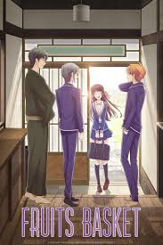

Sailor Moon
Sailor Moon follows Usagi Tsukino, a teenage girl who transforms into the
magical heroine Sailor Moon to fight evil forces and protect the Earth alongside her fellow
Sailor Guardians.
Watch if you enjoy magical girl adventures, friendship, and epic battles against dark forces.
Available on: Disney+

Fruits Basket
Fruits Basket follows Tohru Honda, a kind-hearted girl who becomes involved with
the mysterious Sohma family, who are cursed to transform into animals of the Chinese zodiac when
hugged by the opposite sex.
Watch if you enjoy heartfelt drama, romance, and stories about family and personal growth.
Available on: Hulu, Disney+, Crunchyroll

Cardcaptor Sakura
Cardcaptor Sakura follows Sakura Kinomoto, a young girl who accidentally
releases magical Clow Cards and must retrieve them with the help of her friends to prevent chaos
from spreading.
Watch if you enjoy magical adventures, friendship, and charming coming-of-age stories.
Available on: Crunchyroll